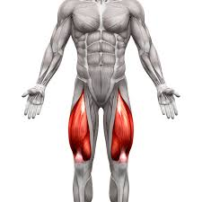

Ce este, roluri principale și clasificare (scheletic, cardiac, neted).
Introducere - Sistemul muscular
Sistemul muscular este unul dintre cele mai complexe și fascinante sisteme ale corpului uman. El asigură mișcarea într-un spectru larg, de la cele mai fine gesturi, cum ar fi clipitul sau zâmbetul, până la eforturile intense, precum alergarea sau ridicarea unei greutăți. Prin contractarea mușchilor, corpul poate transforma semnalele electrice venite din creier în acțiuni mecanice precise.
În total, corpul uman conține peste 600 de mușchi, fiecare adaptat formei și funcției sale. Aceștia includ mușchii scheletici, care sunt controlați voluntar și permit mișcarea membrelor; mușchiul cardiac, care pompează sânge în mod continuu; și mușchii netezi, care reglează funcții automate cum ar fi digestia sau tonusul vaselor de sânge. Diversitatea acestora reflectă varietatea rolurilor pe care le îndeplinesc.
Colaborarea dintre sistemul muscular, cel osos și sistemul nervos este esențială pentru coordonare. Creierul transmite impulse nervoase prin nervi către fibrele musculare; în urma acestor semnale apare contracția, iar mușchii exercită forță asupra oaselor la nivelul articulațiilor. Astfel se realizează mișcările complexe necesare pentru mers, prindere, comunicare și menținerea posturii.
Pe lângă rolul în mișcare, mușchii contribuie la menținerea homeostaziei: produc căldură prin arderea energiei în timpul contracțiilor, participă la stabilizarea articulațiilor și la protecția organelor interne. Starea mușchilor influențează direct performanța fizică, echilibrul și calitatea vieții, iar problemele musculare pot afecta mobilitatea și confortul zilnic.
În această prezentare vei găsi informații despre clasificarea mușchilor, anatomia principalelor grupe musculare, mecanismele de contracție la nivel molecular, precum și metode de diagnostic și recuperare pentru afecțiunile musculare. Vor fi incluse demonstrații vizuale, animații care explică interacțiunea dintre actină și miozină, exemple de exerciții practice și un scurt quiz pentru consolidare.
Anatomie generală - mușchi importanți
Alege un mușchi
Dă click pe o zonă din schemă pentru a vedea detalii: origini, inserții, acțiune, exerciții
Pectoralis Major & Minor
Origine: claviculă, stern. Inserție: humerus. Acțiune: adducție și rotație internă a brațului.
Exerciții recomandate
Împins cu bara (bench press)
Fluturări cu gantere
Biceps brachii
Funcție: flexie cot, supinație antebraț.
Simulare contracție — apasă butonul pentru a vedea o animație simplificată a contracției bicepsului.
Mușchii abdominali
Rol în stabilitate, respirație și mișcări trunchi.
Quadriceps
Extensie genunchi, importante la mers și sărit.

Exerciții pentru Quadriceps
Genuflexiuni (Squats): exercițiu de bază care activează intens quadricepsul și restul membrelor inferioare.
Fandări înainte (Lunges): solicită quadricepsul prin coborârea controlată a corpului.
Îndreptări bulgărești (Bulgarian Split Squats): excelent pentru concentrare pe un singur picior.
Extensii la aparat (Leg Extensions): izolează quadricepsul și permite controlul precis al greutății.
Presa pentru picioare (Leg Press): permite folosirea unor greutăți mai mari pentru dezvoltarea forței.
Sărituri pe loc (Jump Squats): variantă pliometrică pentru putere și explozie.
Mecanica contracției musculare (simplificat)
Actina și miozina — secvență animată.
Tipuri de mușchi
Mușchi scheletici
Mușchii scheletici sunt atașați de oase și permit mișcările voluntare ale corpului, precum mersul, ridicarea obiectelor sau menținerea posturii. Sunt formați din fibre lungi, striate și se contractă rapid, fiind controlați de sistemul nervos somatic.
Mușchi cardiaci
Mușchiul cardiac se găsește exclusiv în inimă și are o structură striată, asemănătoare cu cea a mușchilor scheletici, dar funcționează involuntar. Contracțiile sale sunt ritmice și continue, asigurând pomparea eficientă a sângelui în tot organismul.
Mușchi netezi
Mușchii netezi se află în pereții organelor interne, precum stomacul, intestinele, vasele de sânge și vezica urinară. Ei nu prezintă striații și se contractă lent și ritmic, fiind controlați de sistemul nervos autonom. Au un rol esențial în procese precum digestia și circulația.
Patologii comune
Tendinită
Tendinita reprezintă inflamația unui tendon, apărută de obicei în urma suprasolicitării sau a mișcărilor repetate. Se manifestă prin durere localizată, rigiditate și sensibilitate la atingere.
Distensii musculare
Distensiile apar atunci când fibrele musculare sunt întinse peste limită sau rupte parțial. Cauzele frecvente includ mișcări bruște, lipsa încălzirii sau efortul excesiv.
Atrofie musculară
Atrofia se caracterizează prin reducerea masei și forței musculare. Poate apărea din cauza imobilizării prelungite, sedentarismului sau unor afecțiuni neurologice.
Crampe musculare
Crampele sunt contracții involuntare, dureroase și de scurtă durată ale unui mușchi. Sunt cauzate de deshidratare, oboseală musculară sau dezechilibre electrolitice.
Diagnostic: imagistică
Diagnosticul afecțiunilor musculare se bazează pe o serie de tehnici imagistice moderne care permit evaluarea precisă a structurii și funcției mușchiului.
RMN (Rezonanță Magnetică): oferă imagini detaliate ale țesutului muscular, detectând rupturi, edeme și inflamații.
Ecografie musculară: permite vizualizarea în timp real a contracțiilor musculare, a leziunilor și a acumulărilor de lichid.
EMG (Electromiografie): măsoară activitatea electrică a mușchilor și este esențială pentru identificarea afecțiunilor neurologice sau a slăbiciunii musculare.
Exerciții practice
Resurse
Pentru aprofundarea cunoștințelor despre sistemul muscular, următoarele resurse sunt recomandate:
Cărți și manuale:
"Anatomia omului" – R. Gray
"Atlas de anatomie umană" – F. Netter
Site-uri educaționale:
Visible Body – model 3D interactiv al corpului uman
Kenhub – articole și animații despre anatomie și fiziologie
Jurnale și articole științifice: PubMed, ScienceDirect – pentru studii actuale privind funcția și patologii musculare
Video educaționale: Canale YouTube specializate în anatomie și fiziologie, cum ar fi AnatomyZone
Aceste resurse pot fi utilizate pentru aprofundarea materiei, vizualizări interactive sau exerciții practice legate de sistemul muscular.
Sistemul muscular este esențial pentru toate funcțiile corpului uman, de la mișcare și menținerea posturii până la susținerea organelor interne și reglarea temperaturii. Înțelegerea tipurilor de mușchi, a structurii și a funcțiilor lor este vitală pentru prevenirea accidentărilor și pentru menținerea sănătății pe termen lung.
Afecțiunile musculare pot fi diagnosticate prin tehnici moderne precum RMN, ecografie sau electromiografie, iar recuperarea implică fizioterapie, exerciții și nutriție adecvată. Adoptarea unui stil de viață activ și echilibrat, cu exerciții regulate și alimentație corectă, contribuie semnificativ la menținerea masei și forței musculare.
Această prezentare oferă o privire de ansamblu asupra sistemului muscular, combinând informații teoretice cu elemente multimedia și resurse interactive, pentru a facilita învățarea și înțelegerea profundă a anatomiei și funcționării mușchilor.
Explorarea sistemului muscular nu se oprește aici - continuarea studiului și aplicarea practică a cunoștințelor dobândite vor ajuta la o mai bună conștientizare a corpului și la optimizarea sănătății și performanței fizice.